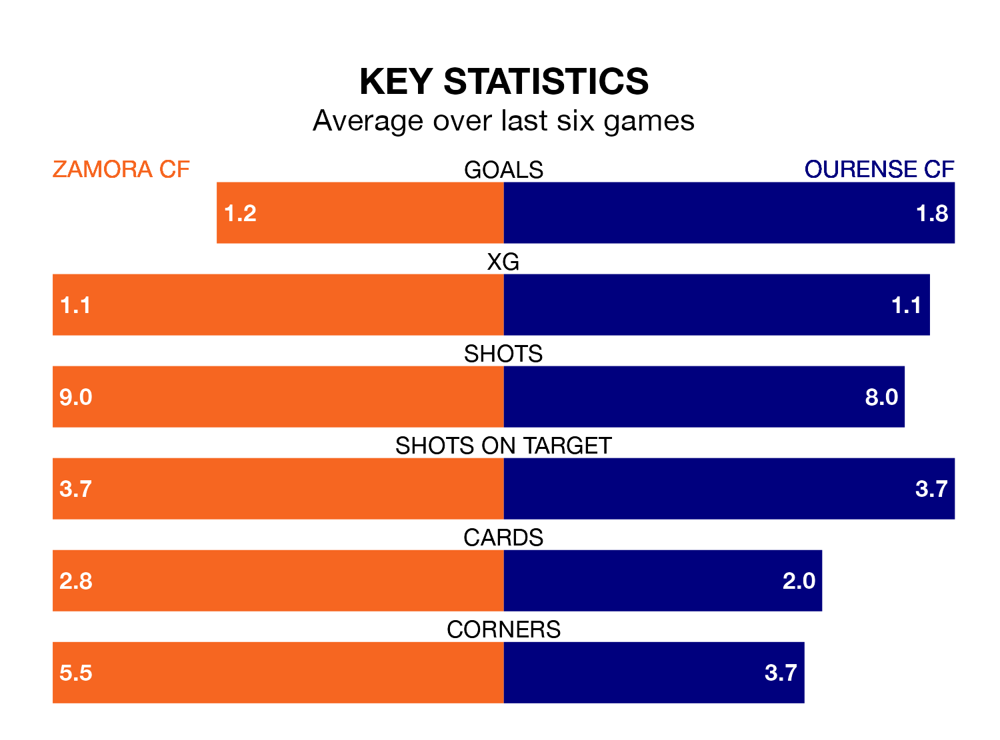

Two of the Segunda División RFEF Group 1's top sides face each other at the Estadio Ruta de la Plata in Sunday's kick-off, when third-placed Zamora CF host second-placed Ourense CF.
Zamora have picked up 13 wins and six draws from 22 games so far this season, and sit one point below the visitors going into the 4.30pm match.
Ourense, meanwhile, have won 13 and drawn seven, picking up 46 points.
With 30 goals in 22 games so far this season, Ourense are the league's joint-third-highest scorers with 1.4 goals per game. And they are conceding fewer than average, letting in 12 goals at a rate of 0.5 per game.
Zamora, meanwhile, are average scorers, with 1.1 goals per game. They have conceded 0.5 goals per game.
The hosts are in good form in the Segunda División RFEF Group 1, with four wins and two draws from their last six games.
And also with four wins and two draws over that period, the away side's form is identical – they have both taken 14 points from 18.
In the last three years, Zamora and Ourense have played each other on three occasions. Zamora won two of them and Ourense one.
Their last meeting was on October 7, when Zamora won 3-0 away.
Zamora's last match was on February 11, a 2-1 win against Coruxo.
Ourense beat SD Compostela 2-0 last time out, on February 10.
Updated: 13:30 (UTC), 12/02/24